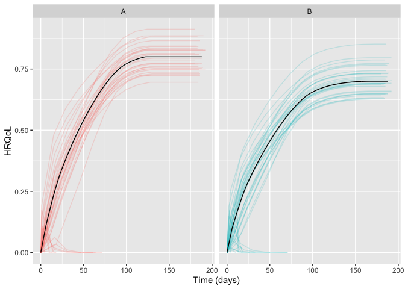
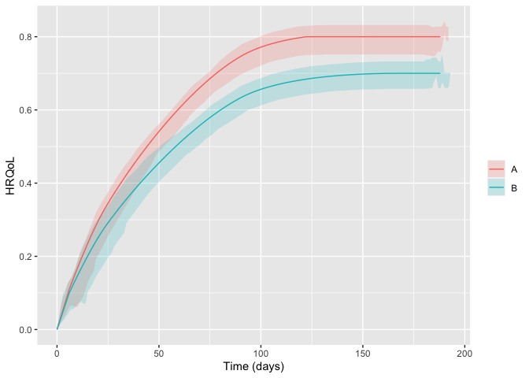

Package for simulating randomised clinical trials with temporal trajectories of health-related quality of life (HRQoL) as the outcome, to quantify effect sizes as single-sampled HRQoL values at end of follow-up and as the area under the trajectories.
Developed as part of the INCEPT (Intensive Care Platform Trial) project (https://incept.dk/), which is primarily supported by a grant from Sygeforsikringen “danmark” (https://www.sygeforsikring.dk/).
Resources
- Website - stand-alone website with full package documentation
-
Health-related quality of life trajectories in critical illness: protocol for a Monte Carlo simulation study - article in Acta Anaesthesiologica Scandinavica outlining the first scientific study to use
hrqolr
Installation
hrqolr isn’t on CRAN yet but can be installed from GitHub if you have the remotes package installed:
# install.packages("remotes")
remotes::install_github("INCEPTdk/hrqolr")You can also install the development version from directly from GitHub. Doing this requires the remotes-package installed. The development version may contain additional features not yet available in the stable CRAN version, but may be unstable or lack documentation.
remotes::install_github("INCEPTdk/hrqolr@dev")Example
First, load the package:
library(hrqolr)
#> Loading 'hrqolr' package v0.0.0.9002.
#> For help, run 'help("hrqolr")' or check out https://inceptdk.github.io/hrqolr/.
#> Consider running 'cache_hrqolr()' for faster simulations. If you have enough RAM,
#> increasing the cache size might speed up things even more; run '?cache_hrqolr' for details.–then, we activate the cache. This is optional but highly recommended.
hrqolr was built to simulate many scenarios, but here we define a single scenario with the built-in helper setup_scenario (note the validation results printed–silence these with verbose = FALSE):
scenario <- setup_scenario(
arms = c("A", "B"),
n_patients = 100,
sampling_frequency = 14,
index_hrqol = 0.0,
first_hrqol = 0.1,
final_hrqol = c(A = 0.8, B = 0.7),
acceleration_hrqol = c(A = 0.1, B = 0.0),
mortality = 0.4,
mortality_dampening = 0.0,
mortality_trajectory_shape = "exp_decay",
prop_mortality_benefitters = 0.0,
)
#> arms valid as is
#> n_patients modified 100 --> c("A" = 100, "B" = 100)
#> index_hrqol modified 0 --> c("A" = 0, "B" = 0)
#> first_hrqol modified 0.1 --> c("A" = 0.1, "B" = 0.1)
#> final_hrqol valid as is
#> acceleration_hrqol valid as is
#> mortality modified 0.4 --> c("A" = 0.4, "B" = 0.4)
#> mortality_dampening modified 0 --> c("A" = 0, "B" = 0)
#> mortality_trajectory_shape modified "exp_decay" --> c("A" = "exp_decay", "B" = "exp_decay")
#> prop_mortality_benefitters modified 0 --> c("A" = 0, "B" = 0)
#> sampling_frequency modified 14 --> c("A" = 14, "B" = 14)Getting an overview of the final scenario:
scenario
#> arms A B
#> n_patients 100 100
#> index_hrqol 0 0
#> first_hrqol 0.1 0.1
#> final_hrqol 0.8 0.7
#> acceleration_hrqol 0.1 0
#> mortality 0.4 0.4
#> mortality_dampening 0 0
#> mortality_trajectory_shape exp_decay exp_decay
#> prop_mortality_benefitters 0 0
#> sampling_frequency 14 14With the scenario at hand, we can sample a number of example trajectories and visualise them:
example_trajs <- sample_example_trajectories(scenario, n_digits = 3)
plot(example_trajs)
You might also want to break apart the trajectories in the arms using well-known ggplot2 facets (but we need to load ggplot2 first). Hiding the legend, then, makes sense as the facet strips will already provide the same information. Here, we also set the arm-level trajectory in black to set it apart from the individual patient trajectories:
library(ggplot2)
plot(example_trajs, arm_aes = list(colour = "black")) +
facet_wrap(~ arm) +
theme(legend.position = "none")
Of course, we might also be interested in summarising the trajectories. Here, for example, with inter-quartile ranges. Note that the ribbons become a bit wonky at end of follow-up because there are increasingly few observations, and some of them may be low because, e.g., mortality benefitters are still alive.

The same scenario specification can, then, be used to simulate a desired number of trials. By default hrqolr will print progress updates to the console (hide these with verbose = FALSE):
sims <- simulate_trials(scenario)
#> 2023-10-12 23:27:26: Estimating ground truth of arm A (0 secs)
#> 2023-10-12 23:27:33: Finished arm 'A' in batch (6.9 secs)
#> 2023-10-12 23:27:33: Estimating ground truth of arm B (6.9 secs)
#> 2023-10-12 23:27:40: Finished arm 'B' in batch (6.84 secs)
#> 2023-10-12 23:27:40: Finished batch (7.37 secs)
#> 2023-10-12 23:27:41: Combining data into final return struct (14.4 secs)
#> 2023-10-12 23:27:41: Sampling example trajectories (14.64 secs)
#> 2023-10-12 23:27:41: Wrapping up, returning output (14.78 secs)The sims object contains quite a lot of interesting information. Perhaps the useful are the summary statistics by arm and head-to-head comparisons between the arms
sims$summary_stats
#> outcome arm analysis p25 p50 p75 mean sd se
#> 1: primary__hrqol_at_eof A all 0.439 0.467 0.490 0.466 0.038 0.004
#> 2: primary__hrqol_at_eof B all 0.398 0.417 0.435 0.418 0.034 0.003
#> 3: primary__hrqol_auc A all 64.062 68.192 71.859 68.263 5.689 0.569
#> 4: primary__hrqol_auc B all 57.188 60.071 62.805 60.233 4.919 0.492
#> 5: secondary1__hrqol_at_eof A all 0.439 0.467 0.490 0.466 0.038 0.004
#> 6: secondary1__hrqol_at_eof B all 0.398 0.417 0.435 0.418 0.034 0.003
#> 7: secondary1__hrqol_auc A all 64.115 68.085 71.749 68.177 5.707 0.571
#> 8: secondary1__hrqol_auc B all 56.982 59.643 62.559 60.013 4.911 0.491
#> 9: secondary2__hrqol_at_eof A all 0.439 0.467 0.490 0.466 0.038 0.004
#> 10: secondary2__hrqol_at_eof B all 0.398 0.417 0.435 0.418 0.034 0.003
#> 11: secondary2__hrqol_auc A all 60.370 64.196 67.171 64.025 5.298 0.530
#> 12: secondary2__hrqol_auc B all 53.668 56.148 58.730 56.292 4.609 0.461
#> 13: primary__hrqol_at_eof A survivors 0.547 0.572 0.595 0.572 0.038 0.004
#> 14: primary__hrqol_at_eof B survivors 0.487 0.513 0.531 0.512 0.033 0.003
#> 15: primary__hrqol_auc A survivors 79.569 83.966 87.275 83.757 5.622 0.562
#> 16: primary__hrqol_auc B survivors 70.325 73.733 76.711 73.818 4.788 0.479
#> 17: secondary1__hrqol_at_eof A survivors 0.654 0.681 0.700 0.678 0.034 0.003
#> 18: secondary1__hrqol_at_eof B survivors 0.585 0.611 0.628 0.605 0.033 0.003
#> 19: secondary1__hrqol_auc A survivors 95.353 99.253 102.825 99.057 5.171 0.517
#> 20: secondary1__hrqol_auc B survivors 83.621 87.737 90.290 86.922 4.812 0.481
#> 21: secondary2__hrqol_at_eof A survivors 0.775 0.785 0.791 0.782 0.012 0.001
#> 22: secondary2__hrqol_at_eof B survivors 0.688 0.697 0.702 0.695 0.011 0.001
#> 23: secondary2__hrqol_auc A survivors 106.407 107.616 108.482 107.330 1.683 0.168
#> 24: secondary2__hrqol_auc B survivors 92.553 93.763 94.678 93.614 1.506 0.151
#> outcome arm analysis p25 p50 p75 mean sd se
sims$comparisons
#> statistic primary__hrqol_at_eof primary__hrqol_at_eof primary__hrqol_auc primary__hrqol_auc secondary1__hrqol_at_eof secondary1__hrqol_at_eof secondary1__hrqol_auc secondary1__hrqol_auc secondary2__hrqol_at_eof secondary2__hrqol_at_eof secondary2__hrqol_auc secondary2__hrqol_auc
#> 1: comparator A A A A A A A A A A A A
#> 2: target B B B B B B B B B B B B
#> 3: mean_estimate -0.048 -0.06 -8.03 -9.939 -0.048 -0.072 -8.164 -12.135 -0.048 -0.086 -7.734 -13.716
#> 4: mean_ground_truth -0.063 -0.063 -9.775 -9.775 -0.063 -0.063 -9.955 -9.955 -0.063 -0.063 -9.763 -9.763
#> 5: sd 0.051 0.053 7.491 7.786 0.051 0.047 7.494 6.908 0.051 0.018 7.011 2.419
#> 6: se 0.005 0.005 0.749 0.779 0.005 0.005 0.749 0.691 0.005 0.002 0.701 0.242
#> 7: analysis all survivors all survivors all survivors all survivors all survivors all survivors
#> 8: bias 0.014 0.003 1.745 -0.164 0.014 -0.009 1.791 -2.18 0.014 -0.024 2.03 -3.953
#> 9: bias_se 0.005 0.005 0.749 0.779 0.005 0.005 0.749 0.691 0.005 0.002 0.701 0.242
#> 10: relative_bias -0.228 -0.044 -0.179 0.017 -0.23 0.15 -0.18 0.219 -0.231 0.378 -0.208 0.405
#> 11: relative_bias_se 0.082 0.085 0.077 0.08 0.081 0.074 0.075 0.069 0.081 0.028 0.072 0.025
#> 12: mse 0.003 0.003 58.605 60.042 0.003 0.002 58.8 52.001 0.003 0.001 52.779 21.418
#> 13: mse_se 0 0 6.969 9.101 0 0 6.977 7.713 0 0 6.177 2.068
#> 14: coverage 0.96 0.96 0.97 0.94 0.96 0.93 0.97 0.91 0.96 0.51 0.96 0.47
#> 15: coverage_se 0.02 0.02 0.017 0.024 0.02 0.026 0.017 0.029 0.02 0.05 0.02 0.05
#> 16: bias_corrected_coverage 0.95 0.95 0.95 0.95 0.95 0.94 0.95 0.94 0.95 0.93 0.95 0.91
#> 17: bias_corrected_coverage_se 0.022 0.022 0.022 0.022 0.022 0.024 0.022 0.024 0.022 0.026 0.022 0.029
#> 18: rejection_proportion 0.16 0.18 0.19 0.23 0.16 0.37 0.19 0.46 0.16 0.99 0.19 1
#> 19: rejection_proportion_se 0.037 0.038 0.039 0.042 0.037 0.048 0.039 0.05 0.037 0.01 0.039 0
#> 20: n_sim 100 100 100 100 100 100 100 100 100 100 100 100
#> 21: p25 -0.082 -0.092 -12.713 -14.839 -0.082 -0.099 -12.67 -16.325 -0.082 -0.097 -12.452 -15.141
#> 22: p50 -0.045 -0.055 -7.286 -9.731 -0.045 -0.071 -7.413 -12.067 -0.045 -0.087 -7.195 -13.69
#> 23: p75 -0.012 -0.023 -2.844 -4.592 -0.012 -0.039 -2.995 -7.739 -0.012 -0.074 -2.751 -12.232
#> statistic primary__hrqol_at_eof primary__hrqol_at_eof primary__hrqol_auc primary__hrqol_auc secondary1__hrqol_at_eof secondary1__hrqol_at_eof secondary1__hrqol_auc secondary1__hrqol_auc secondary2__hrqol_at_eof secondary2__hrqol_at_eof secondary2__hrqol_auc secondary2__hrqol_aucIssues and enhancements
We use the GitHub issue tracker for all bug/issue reports and proposals for enhancements.
Contributing
We welcome contributions directly to the code to improve performance as well as new functionality. For the latter, please first explain and motivate it in an issue.
Changes to the code base should follow these steps:
- Fork the repository
- Make a branch with an appropriate name in your fork
- Implement changes in your fork, make sure it passes R CMD check (with neither errors, warnings, nor notes) and add a bullet at the top of NEWS.md with a short description of the change, your GitHub handle and the id of the pull request implementing the change (check the
NEWS.mdfile to see the formatting) - Create a pull request into the
devbranch ofadaptr
Citation
If using hrqolr, please consider citing it:
citation(package = "hrqolr")
#> To cite package 'hrqolr' in publications use:
#>
#> Kaas-Hansen BS, Granholm A (2023). hrqolr: an R package for
#> simulating health-related quality of life trajectories.
#> https://inceptdk.github.io/hrqolr/
#>
#> A BibTeX entry for LaTeX users is
#>
#> @Manual{,
#> title = {{hrqolr}: an R package for simulating health-related quality of life trajectories},
#> author = {Benjamin Skov Kaas-Hansen and Anders Granholm},
#> year = {2023},
#> url = {https://inceptdk.github.io/hrqolr/},
#> }